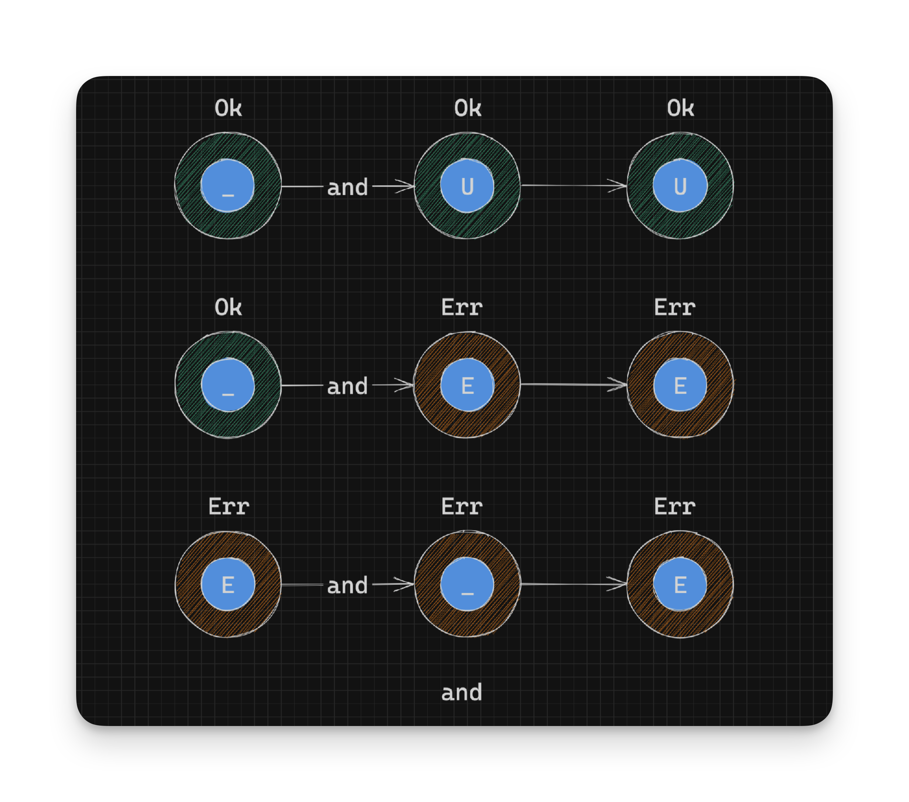
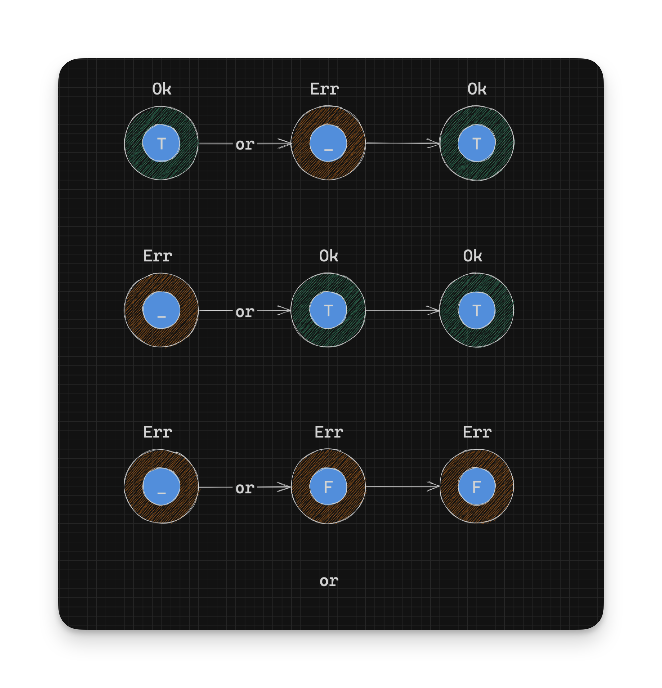

Working With Rust Result - Combining Results Some More - Part 9
There are even more ways to combine Resultss!
and
and is similar to and_then except a default Result is returned on an Ok instance:
pub fn and<U>(self, res: Result<U, E>) -> Result<U, E> {
match self {
Ok(_) => res,
Err(e) => Err(e),
}
}Notice that the value inside the Ok instance is never used:
Ok(_) => res,In summary:
// pseudocode
// Given a Result<T, E>
// Return typr: Result<U, E>
Ok(_:T) -> res:Result<U, E> -> Result<U, E> // `Ok` value type changes from `T` from `U`
Err(e:E) -> Err(e) -> Result<U, E> // Notice that the `Err` value type is fixed at: `E`
This can be useful when you only want to know if something succeeded or failed instead of needing to work on its value.
Take creating a directory and subsequently creating a file in that directory only if the directory creation succeeded.
We can create a directory with the create_dir function from the std::fs module:
fn create_dir<P: AsRef<Path>>(path: P) -> io::Result<()>Notice how this function returns a Result with a Unit as the success value.
We can create a file with the create function on the std::fs::File struct:
fn create<P: AsRef<Path>>(path: P) -> io::Result<File>If we use and_then to complete the example use case:
fn create_directory_and_then_file(dir_path: &Path, file_name: &str) -> io::Result<File> {
create_dir(dir_path)
.and_then(|_| { // We ignore the value from create_dir
File::create(dir_path.join(file_name))
}) // Result<File>
}We have to ignore the previous success value in and_then (as we can’t do anything useful with Unit). This is a little verbose and we can trim it down with and:
fn create_directory_and_file(dir_path: &Path, file_name: &str) -> io::Result<File> {
create_dir(dir_path)
.and(File::create(dir_path.join(file_name))) // Result<File>
}or
If you wanted to try an alternative Result on Err and you didn’t care about the error value, you could use or. or is defined as:
pub fn or<F>(self, res: Result<T, F>) -> Result<T, F> {
match self {
Ok(v) => Ok(v),
Err(_) => res,
}
}In the definition above the value res is used only when there is an Err instance. If the Result is an Ok instance, its value
is returned.
In summary:
// pseudocode
// Given: Result<T, E>
// Return type: Result<T, F>
Err(_:E) -> res:Result<T, F> -> Result<T, F> // The `Err` value type changes from `E` to `F`
Ok(t:T) -> Ok(t) -> Result<T, F> // `Ok` value type is fixed: `T`It’s important to note that res dictates the final Err type returned from or and that the type inside the Ok constructor doesn’t change. We’ll see that come into play in the example below.

Here’s an example of where we can try one of several parse functions until we find one that succeeds.
Given a common error type MyError and a common success type MyResult:
#[derive(Debug)]
struct MyError(String);
#[derive(Debug)]
enum MyResult {
N(u32),
B(bool),
S(String),
}And functions to parse numbers and booleans:
fn parse_number(value: &str) -> Result<u32, ParseIntError> {
u32::from_str(value)
}
fn parse_bool(value: &str) -> Result<bool, ParseBoolError> {
bool::from_str(value)
}One thing to note is that both functions return different error types in Err: ParseIntError and ParseBoolError respectively.
How would we combine these functions into parsing a string slice into a type of MyResult? And we also don’t support converting a string that is all caps into MyResult. That would be an error.
Note that we don’t need to align the error types here as mentioned before because the Result passed to or would change the final Err type as required.
Here’s one way we could do it:
fn parse_my_result(value: &str) -> Result<MyResult, MyError> {
parse_number(value) // Result<u32, ParseIntError>
.map(|n| MyResult::N(n)) // Result<MyResult, ParseIntError>
.or(
parse_bool(value) // Result<u32, ParseBoolError>
.map(|b| MyResult::B(b))
) // Result<MyResult, ParseBoolError>
.or(
if value.to_uppercase() == value {
// We don't support full caps
Err(MyError(format!("We don't support screaming case: {}", value))) // Result<MyResult, MyError>
} else {
Ok(MyResult::S(value.to_owned())) // Result<MyResult, MyError>
}
) // Result<MyResult, MyError>
}We could use it like:
let r1: Result<MyResult, MyError> = parse_my_result("123"); // Ok(N(123))
let r2: Result<MyResult, MyError> = parse_my_result("true"); // Ok(B(true))
let r3: Result<MyResult, MyError> = parse_my_result("something"); //Ok(S("something"))
let r4: Result<MyResult, MyError> = parse_my_result("HELLO"); //Err(MyError("We don't support screaming case: HELLO"))How the Err type changed between ParseIntError, ParseBoolError to MyError can be a bit harder to see. Here’s a more detailed example of the above:
fn parse_my_result_2(value: &str) -> Result<MyResult, MyError> {
let p1: Result<MyResult, ParseIntError> =
parse_number(value)
.map(|n| MyResult::N(n));
let p2: Result<MyResult, ParseBoolError> =
parse_bool(value)
.map(|b| MyResult::B(b));
let p3: Result<MyResult, MyError> =
if value.to_uppercase() == value {
// We don't support full caps
Err(MyError(format!("We don't support screaming case: {}", value)))
} else {
Ok(MyResult::S(value.to_owned()))
};
let r1: Result<MyResult, ParseBoolError> = p1.or(p2); // p2's type wins
let r2: Result<MyResult, MyError> = r1.or(p3); // p3's type wins
r2
}The function res, passed to or dictates the final Err type. Also when chaining multiple or calls, the final res block dictates the final Result type. In the case of or chaining, the Ok type is fixed but the Err type can vary!
or_else
or_else is similar to or with the exception that you get access to the error type E:
pub fn or_else<F, O: FnOnce(E) -> Result<T, F>>(self, op: O) -> Result<T, F> {
match self {
Ok(t) => Ok(t),
Err(e) => op(e),
}
}The function op takes in the Err type E and returns a Result with the same success type T and a new error type F:
FnOnce(E) -> Result<T, F>In summary:
// pseudocode
// Given: Result<T, E>
// Return type: Result<T, F>
Err(e:E) -> op(e) -> Result<T, F> // `Err` value type goes from `E` -> `F`
Ok(t:T) -> Ok(t) -> Result<T, F> // `Ok` value type is fixed: `T`This can be useful when you need access to the error to make a decision about the result to return or when you need to log the error.
For example, if you want to log the error before returning a fallback:
fn parse_number_somehow(value: &str) -> Result<u32, MyError> {
parse_number(value)
.or_else(|e| {
eprintln!("Could not convert '{}' to a number: {}, defaulting to length", value, e);
parse_by_length(value)
})
}
fn parse_by_length(value: &str) -> Result<u32, MyError> {
let length = value.len();
if length <= u32::MAX as usize {
Ok(length as u32)
} else {
Err(MyError("Your string is too long for u32".to_owned()))
}
}
parse_number_somehow("number")
//Could not convert 'number' to a number: invalid digit found in string, defaulting to length
// Ok(6)- Continue on to Working with Errors
- Back to TOC